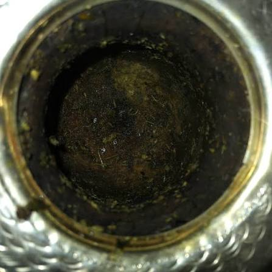

Cómo curar un mate de calabaza
Llená el mate con yerba usada y humedecé con agua tibia durante 24 horas.
Tips
Llená el mate con yerba usada y humedecé con agua tibia durante 24 horas.
El agua nunca debe hervir. La temperatura recomendada es entre 75°C y 80°C.
